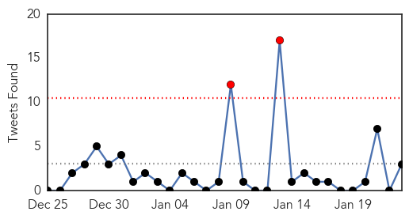
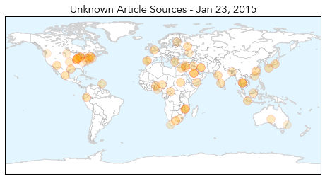
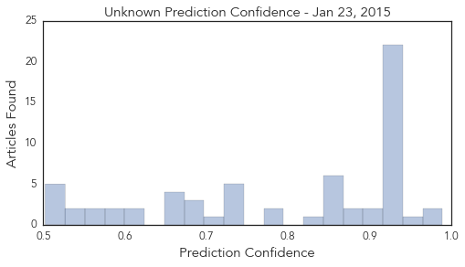

Dengue Fever
30-Day Web Trend
0 alerts, 0 warnings

30-Day Twitter Trend
1 alerts, 0 warnings

Article Locations

Article Confidences

Top Articles:
Top Tweets:
-
No tweets found for Jan 23, 2015
Unknown
30-Day Web Trend
0 alerts, 0 warnings

30-Day Twitter Trend
2 alerts, 0 warnings

Article Locations
Article Confidences
Top Articles:
- 0.989
- CSU researchers investigate dangerous MERS virus Rocky Mountain Collegian
- 0.977
- Benin Lassa fever outbreak declared over
- 0.945
- Seattle Superbug: Untreatable Virus 'Carbapenem-Resistant Enterobacteriaceae' Sickens Dozens Across City : News : Headlines & Global News
- 0.920
- Number of flu-related deaths in NM jumps to 12
- 0.917
- Chicago Tribune
- 0.917
- Chicago Tribune
- 0.917
- Chicago Tribune
- 0.917
- Chicago Tribune
- 0.917
- Chicago Tribune
- 0.917
- Chicago Tribune
- 0.917
- Chicago Tribune
- 0.917
- Chicago Tribune
- 0.917
- Chicago Tribune
- 0.917
- Chicago Tribune
- 0.917
- Chicago Tribune
- 0.917
- Chicago Tribune
- 0.917
- Chicago Tribune
- 0.917
- Chicago Tribune
- 0.917
- Chicago Tribune
- 0.917
- Chicago Tribune
- 0.917
- Chicago Tribune
- 0.917
- Chicago Tribune
- 0.917
- Chicago Tribune
- 0.917
- Chicago Tribune
- 0.917
- Chicago Tribune
- 0.914
- Health officials seek Lower Sackville students at risk for infection
- 0.895
- Michigan child dies from influenza
- 0.890
- Egypt reports 8th bird flu death in 2015
- 0.873
- Superbug spread through contaminated scopes sickened dozens in Seattle
- 0.866
- Five Lebanese soldiers killed in clashes near border with Syria
- 0.866
- U.S. says "not clear" if Iran exerting control over rebels in Yemen
- 0.866
- French woman kidnapped in Central Africa released
- 0.866
- Ukraine separatist leader won't seek ceasefire talks
- 0.866
- THAILAND PRESS-Corruption at lowest level in 5 years, says survey
- 0.856
- DK, Udupi account for 50% of malaria cases
- 0.837
- The Portugal News
- 0.792
- FG’ll Contain Bird Flu -Minister
- 0.783
- Israel and Barbados discuss health initiatives -- NationNews Barbados -- Local, Regional and International News nationnews.com
- 0.740
- Kala-azar now a notifiable disease
- 0.739
- HPV vaccine safe, says health ministry
- 0.738
- Hospital capacity to be reviewed
- 0.738
- Indiana flu deaths rose by 12 last week to 97 total
- 0.728
- Health Ministry Approves HPV Vaccine As Safe
- 0.711
- Travelers Using Antibiotics May Be Contributing to Global Spread of Superbugs
- 0.688
- Malawi Floods: 20,000 people stranded
- 0.687
- Travelers’ diarrhea antibiotics may bring greater risk for ‘superbug’ spread: Study
- 0.684
- Michigan records first child flu death of the year
- 0.665
- World’s most popular banana faces eradication by deadly fungus — RT News
- 0.665
- Many U.S. Girls Aren't Getting HPV Vaccine, Study Finds
- 0.661
- Tuberculosis patient worked at school and day care while contagious
Showing top 50 articles...
Top Tweets:
- 0.587
- RT: FluFactFriday: It’s common for different flu viruses to circulate later in the season. Fluvax protects against 3 or 4 flu viru…
- 0.577
- FluFactFriday: It’s common for different flu viruses to circulate later in the season. Fluvax protects against 3 or 4 flu viruses.